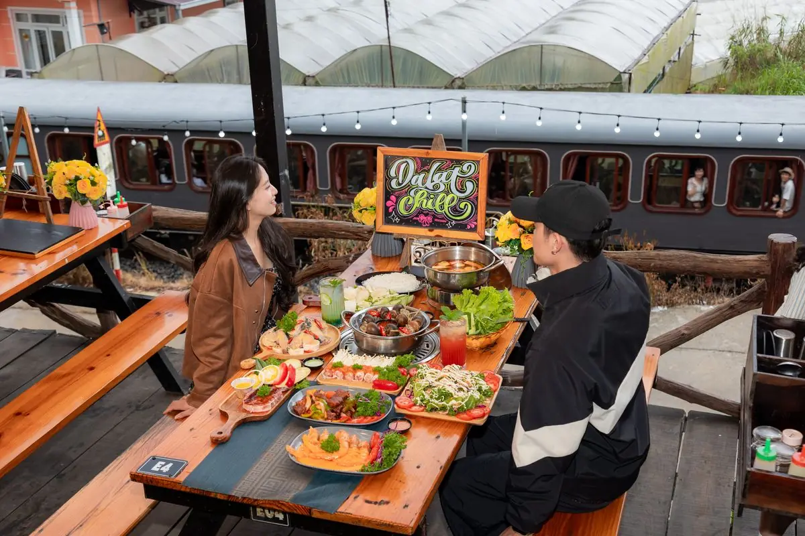

Mùa lạnh ở Đà Lạt, ăn lẩu nướng ngon nhất là vừa ngồi bên bếp than hồng vừa húp nồi lẩu nóng giữa sương mù. Tiệm Nướng Trạm Dừng Chill (111 Huỳnh Tấn Phát, Phường Xuân Trường) làm trọn cảm giác đó: bàn ngoài trời nhìn thung lũng 180°, xe lửa cổ chạy ngay dưới chân quán, 4.8/5 sao với 7.060 lượt đánh giá trên Google Maps (số đọc ngày 04/09/2026). Mở cửa 15:00–23:00, giá 95.000–300.000đ/người. Đi thêm vài bước tới số 113 là Tiệm Nướng & Chill Xóm Lèo (quán cùng chủ với Trạm Dừng Chill), cũng một quán nướng view thung lũng trên cùng tuyến đường tàu.
Vì sao lẩu + nướng hợp với Đà Lạt mùa lạnh?
Khác với Sài Gòn nóng quanh năm, Đà Lạt vào mùa lạnh (khoảng tháng 12 đến tháng 2, khi nhiệt độ thấp nhất ban đêm trung bình chỉ khoảng 11–13°C theo bảng khí hậu trên Wikipedia) ban ngày se lạnh, ban đêm khá lạnh, cho phép bạn ngồi ngoài trời thoải mái suốt buổi tối. Bếp than hồng tỏa nhiệt một bên, nồi lẩu bốc khói một bên — vừa ấm người vừa ấm bụng. Mùi thịt nướng hòa vào không khí se lạnh và lớp sương trắng phủ thung lũng tạo ra trải nghiệm mà chỉ phố núi mới có.
Đồ ăn ngon, nhân viên phục vụ tốt. Trời mưa tiệm còn phát áo mưa đi về nữa, quá dễ thương.
Gọi cả lẩu lẫn nướng còn dung hòa được cả nhóm: người mê nướng cứ trở vỉ thịt, người thích nước nóng cứ nhúng lẩu. Đặc biệt với nhóm đông, một nồi lẩu ở giữa bàn giữ cho cả bàn luôn có món nóng để gắp trong lúc chờ mẻ nướng tiếp theo.
3 cái view "đặc sản" mùa lạnh tại Trạm Dừng Chill
- View xe lửa: tuyến tàu lửa cổ Đà Lạt – Trại Mát (đoạn dài khoảng 7 km còn chạy tàu du lịch, thuộc tuyến đường sắt do Pháp xây) chạy ngay dưới chân quán. Vừa nướng vừa nghe còi tàu là khoảnh khắc rất riêng.
- Hoàng hôn thung lũng: nắng chiều vàng từ 15h, hoàng hôn buông từ khoảng 16h30; view 180° phủ vàng cả thung lũng nhà lồng.
- "Biển sao nhà lồng": khoảng 18h30, hàng ngàn nhà kính đồng loạt lên đèn, xuyên qua lớp sương như một biển sao dưới thung lũng.

Gợi ý tự ghép lẩu + nướng mùa lạnh từ menu thật
Trạm Dừng Chill gọi món lẻ, không bán combo hay set cố định. Quán có 3 loại lẩu, giá tính theo nồi, để chọn làm "trục ấm" cho bàn, ghép cùng các món nướng best-seller. Dưới đây là vài cách phối từ chính thực đơn của quán (giá lẻ từng món, đã gồm VAT, có thể đổi theo mùa):

| Nồi lẩu nóng | Giá/nồi | Ghép món nướng gợi ý |
|---|---|---|
| Lẩu Gà Lá É (đặc sản Đà Lạt) | 300K | Ba Chỉ Heo Ngũ Vị 132K + Chân Gà Nướng Muối Ớt 105K |
| Lẩu Hải Sản | 320K | Tôm Nướng Muối Ớt 150K + Bạch Tuộc Nướng 155K |
| Lẩu Cá Tầm | 320K | Ba Chỉ Bò Nướng Muối Tiêu 155K + Mực Ướp Sa Tế 160K |
Muốn "lai rai" giữ ấm trong lúc chờ lẩu sôi, có thể gọi thêm Xúc Xích Đức Nướng 20K, Chả Ram Tôm Đất 95K hay Khoai Lang Kén 70K. Nhóm thích đậm đà thì thêm món signature Bò Kobe Nướng Tảng Phô Mai Trứng Muối 209K — món signature của quán.
Một vài món nướng best-seller hợp tiết lạnh
| Món | Giá |
|---|---|
| Ba Chỉ Bò Cuộn Kim Châm | 137K |
| Ba Chỉ Bò Nướng Muối Tiêu | 155K |
| Bò Kobe Nướng Tảng Phô Mai Trứng Muối (signature) | 209K |
| Sườn Cay Thái Lan | 260K |
| Ốc Nhồi Thịt | 165K |
| Cá Tầm Lúc Lắc | 165K |
| Tôm Chiên Trứng Muối | 160K |
Đồ uống mùa lạnh nên ưu tiên đồ ấm: trà nóng/thảo mộc 37–39K hoặc trà trái cây 44–49K. Ai muốn lãng mạn hơn có thể thêm rượu vang chai 750ml 190–210K (rượu mơ, soju, táo mèo 110–170K một chai).
Khung giờ "săn" tàu lửa & hoàng hôn khi đi ăn lẩu nướng
Mùa lạnh trời tối sớm, nên canh giờ tàu để vừa ăn vừa ngắm. Khung giờ tàu chạy qua quán:
Tàu lửa cổ tuyến Đà Lạt – Trại Mát chạy qua quán trong khung 16:30 – 21:25.
Khung vàng: có mặt khoảng 16:00 là kịp tàu từ lúc bắt đầu chạy qua quán (16:30), rồi ngồi lại ngắm hoàng hôn. Lưu ý khung 17:30–19:00 quán thường kín khách và không nhận đặt bàn mới — nên chọn đến sớm hơn hoặc từ 19:30. Bảng giờ chi tiết xem ở trang canh giờ tàu tới quán.
So sánh: chọn quán lẩu nướng mùa lạnh ở Đà Lạt sao cho hợp?
Đà Lạt có nhiều quán nướng, mỗi nơi một thế mạnh. Bảng dưới giúp bạn cân nhắc trung lập (thông tin quán khác chỉ mang tính tham khảo):
| Tiêu chí | Trạm Dừng Chill | Các loại hình khác (tham khảo) |
|---|---|---|
| View khi ăn | 3 trong 1: thung lũng + xe lửa + biển sao nhà lồng | Tùy loại hình (quán trong nhà, quán view một góc...) |
| Không gian | Bàn ngoài trời, thoáng, khói thoát nhanh | Tùy loại hình |
| Lẩu + nướng cùng bàn | Có, 3 loại lẩu nóng | Tùy loại hình |
| Khoảng giá/người | 95.000–300.000đ (minh bạch trên menu) | Tham khảo, tùy loại hình |
| Đánh giá Google | 4.8 sao, hơn 7.060 lượt | Tham khảo |
| Setup sinh nhật/kỷ niệm | Miễn phí trang trí bàn tiệc | Tham khảo, tùy loại hình |
Nếu đi mừng dịp đặc biệt, quán có setup sinh nhật miễn phí hoặc gợi ý góc hẹn hò ngắm hoàng hôn để bữa lẩu nướng thêm đáng nhớ. Nhóm đông, công ty thì tham khảo đặt tiệc team building.
Mẹo ăn lẩu nướng mùa lạnh Đà Lạt cho ấm trọn buổi
Mẹo giữ ấm hiệu quả nhất là gọi lẩu trước rồi nướng đồ trong lúc chờ nước sôi, để lúc nào trên bàn cũng có thứ đang nóng. Ngồi ngoài trời lạnh quá thì cứ báo nhân viên — quán có mền và lò than mang tận bàn, trời mưa thì có khu mái che.
- Gọi lẩu trước để nước kịp sôi, trong lúc chờ thì nướng đồ — vừa ăn vừa giữ ấm.
- Mặc áo khoác dày, khăn choàng, giày kín vì ngồi ngoài trời ban đêm khá lạnh; lạnh quá thì báo nhân viên, quán có mền và lò than sưởi mang tận bàn, trời mưa thì có khu mái che. Mang thêm khăn lau vì ăn nướng + lẩu dễ ám mùi.
- Đến khoảng 16:00 để có bàn trước khi hoàng hôn và giờ tàu cùng bắt đầu (16:30).
- Ưu tiên đồ uống nóng (trà thảo mộc, trà trái cây ấm) để ấm bụng gấp đôi.
- Đi cuối tuần hay dịp lễ nên đặt bàn trước, vì khung giờ đẹp rất nhanh kín.
Mùa lạnh Đà Lạt qua nhanh lắm, mà cảm giác húp nồi lẩu nóng giữa sương mù, nghe còi tàu vọng lên từ thung lũng thì khó tìm ở đâu khác. Nếu bạn đang tính một buổi ấm cúng cho gia đình hay nhóm bạn, hãy đặt bàn trước qua website (quán xác nhận lại qua Zalo trong khoảng 15 phút, trong giờ mở cửa) hoặc gọi 0989.765.070. Trạm Dừng Chill chừa sẵn cho bạn một góc ấm, một nồi lẩu nóng và cả một thung lũng sương mù để ngắm.
Câu hỏi thường gặp
Mùa lạnh Đà Lạt ăn lẩu nướng ở đâu view đẹp?
Trạm Dừng Chill (111 Huỳnh Tấn Phát, Phường Xuân Trường) là một lựa chọn hợp nếu bạn muốn ngồi ngoài trời: bàn ngoài trời view thung lũng 180°, xe lửa cổ chạy dưới chân quán và 'biển sao nhà lồng' lúc 18h30. Đặt bàn tại trang chủ quán.
Trạm Dừng Chill có những loại lẩu nào?
Quán có 3 loại lẩu, giá tính theo nồi: Lẩu Gà Lá É 300K/nồi (đặc sản Đà Lạt), Lẩu Hải Sản 320K/nồi và Lẩu Cá Tầm 320K/nồi. Có thể ghép cùng món nướng best-seller cùng bàn. Xem chi tiết ở trang thực đơn.
Đi ăn lẩu nướng mùa lạnh nên mặc gì?
Nên mặc áo khoác dày, khăn choàng cổ và giày kín vì ngồi ngoài trời ban đêm khá lạnh. Mang thêm khăn lau vì ăn nướng và lẩu dễ ám mùi — nhưng đó là 'mùi kỷ niệm' Đà Lạt.
Đến lúc mấy giờ để vừa ăn nướng vừa ngắm tàu lửa?
Có mặt khoảng 16:00 để đón tàu từ lúc bắt đầu chạy qua quán (16:30) rồi ngồi lại ngắm hoàng hôn. Lưu ý 17:30–19:00 quán thường kín khách; nên đến sớm hơn hoặc từ 19:30. Xem bảng giờ tàu ở trang săn tàu Đà Lạt.
Một người ăn lẩu nướng ở Trạm Dừng Chill hết khoảng bao nhiêu?
Mức chi tham khảo khoảng 95.000–300.000đ/người tùy món gọi. Giá đã gồm VAT, có thể đổi theo mùa; dịp lễ Tết (Mùng 2–Mùng 8 Âm lịch) phụ thu 10%.
Đặt bàn ăn lẩu nướng mùa lạnh như thế nào?
Điền form đặt bàn trên website của quán, sau đó quán xác nhận lại qua Zalo trong khoảng 15 phút (trong giờ mở cửa), hoặc gọi trực tiếp 0989.765.070. Cuối tuần và dịp lễ nên đặt sớm vì khung giờ đẹp nhanh kín.
Quán có chỗ đỗ ô tô không?
Trạm Dừng Chill có bãi đỗ miễn phí cho cả xe máy và ô tô con ngay tại quán. Quán ở 111 Huỳnh Tấn Phát, Phường Xuân Trường, cách trung tâm Đà Lạt khoảng 7 km, đi xe khoảng 20 phút theo hướng Trại Mát. Giờ cao điểm cuối tuần có thể phải đỗ xa hơn khoảng 100–200m. Quán mở từ 15:00 nên đến sớm sẽ đỗ dễ hơn; Grab và taxi vào được tận nơi.